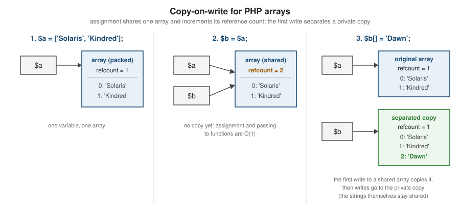

References and Memory Management
|
This content was generated with the assistance of AI and should be verified against the official documentation before being relied on in production. |
This page is written against PHP 8.5, checked on 2026-10-05. PHP manages memory automatically: values are freed when nothing uses them, and a cycle collector cleans up structures that refer to themselves. Understanding the mechanism explains why copying arrays is cheap, why references rarely help performance, and how long-running workers leak.
What references are
A reference makes two names refer to the same variable content. It is not a pointer: you cannot do arithmetic on
it or take its address, and both names are equal peers — neither is "the original". $b = &$a binds $b to the
content of $a.
<?php
declare(strict_types=1);
$title = 'Kindred';
$alias = &$title; // both names share one value
$alias = 'Dawn';
echo $title, "\n"; // Dawn
unset($alias); // removes the NAME $alias, not the value
echo $title, "\n"; // Dawn -- still there
$x = 1;
$y = &$x;
$y = &$z; // rebinding $y to another variable does not affect $x
$z = 5;
echo $x, ' ', $y, "\n"; // 1 5References appear in four places: reference assignment (=&), by-reference parameters (function f(&$x)), returning
by reference (function &f()), and foreach ($array as &$value). global $x and static $x are also implemented as
references.
Source: What References Are and What References Are Not
Passing and returning by reference
<?php
declare(strict_types=1);
function addFine(array &$member, int $cents): void // the caller's array is modified
{
$member['fines'] = ($member['fines'] ?? 0) + $cents;
}
$member = ['id' => 'M-17'];
addFine($member, 25);
addFine($member, 50);
echo $member['fines'], "\n"; // 75
final class Settings
{
private array $values = ['loan_days' => 21];
public function &get(string $key): mixed { return $this->values[$key]; }
public function all(): array { return $this->values; }
}
$settings = new Settings();
$days = &$settings->get('loan_days'); // bind with =& to keep the reference
$days = 28;
print_r($settings->all()); // ["loan_days" => 28]Source: Passing by Reference and Returning References
The array copy pitfall
When an array element is a reference, copying the array copies the reference too: both arrays then share that element. This is the most surprising consequence of references, and one reason to avoid them in data structures.
<?php
declare(strict_types=1);
$original = ['copies' => 1];
$ref = &$original['copies']; // the element is now a reference
$copy = $original; // a "copy" of the array...
$copy['copies'] = 99; // ...but this writes through the shared reference
var_dump($original['copies']); // int(99)
// Spotting references inside arrays (7.4)
var_dump(ReflectionReference::fromArrayElement($original, 'copies') !== null); // bool(true)
unset($ref); // the element stops being a reference only when no other name refers to itThe same mechanism causes the foreach by-reference pitfall shown in
Control Structures.
Source: Spotting References and ReflectionReference
zvals, reference counting and copy-on-write
Internally, every PHP value is a zval: a small structure holding the type and either the value itself (null,
booleans, integers and floats are stored inline) or a pointer to a heap structure (strings, arrays, objects,
resources, references). Heap structures carry a reference count: how many zvals point to them. Assigning a string or
an array to another variable, or passing it to a function, copies only the pointer and increments the count. The
structure is freed when the count drops to zero.
Writes use copy-on-write: before modifying a string or array whose count is greater than one, the engine
separates it, making a private copy for the variable being written. Objects are never separated: they are shared
through their handle, which is why clone exists.

<?php
declare(strict_types=1);
$catalogue = range(1, 100_000); // about 2 MiB
$base = memory_get_usage();
$view = $catalogue; // shares the array
printf("after assignment: +%d KiB\n", (memory_get_usage() - $base) / 1024); // +0 KiB
$view[] = 100_001; // first write: separation
printf("after first write: +%d KiB\n", (memory_get_usage() - $base) / 1024); // +2052 KiB
$label = str_repeat('x', 3);
debug_zval_dump($label); // refcount(2): $label plus the function argument
$another = $label;
debug_zval_dump($label); // refcount(3)after assignment: +0 KiB
after first write: +2052 KiB
string(3) "xxx" refcount(2)
string(3) "xxx" refcount(3)Two practical consequences:
-
Passing large arrays to functions is cheap; do not add
&"for performance". A reference can even force a copy, because a value that is both referenced and shared must be separated. -
Literal arrays and strings in your code are often immutable and interned: they are shared by every request in an OPcache-enabled server and never counted, which is why
debug_zval_dump()reports surprising numbers for them.
Source: Reference Counting Basics and debug_zval_dump
Garbage collection of cycles
Reference counting cannot free structures that refer to themselves: two objects pointing at each other keep each other’s count above zero after every outside reference is gone. PHP’s cycle collector finds such garbage. Values whose count is decremented but not to zero are recorded as possible roots; when the root buffer fills (10,000 roots by default, adjusted dynamically), the collector runs, simulating decrements to find groups that are only referenced from inside themselves, and frees them, calling their destructors.
<?php
declare(strict_types=1);
final class Node
{
public ?Node $next = null;
public function __construct(public string $name) {}
public function __destruct() { echo "freed {$this->name}\n"; }
}
$a = new Node('a');
$b = new Node('b');
$a->next = $b;
$b->next = $a; // a cycle
unset($a, $b); // counts stay at 1: nothing is freed yet
echo "after unset\n";
$collected = gc_collect_cycles(); // force a collection
echo "collected {$collected}\n";
print_r(array_intersect_key(gc_status(), array_flip(['runs', 'collected', 'threshold'])));after unset
freed a
freed b
collected 2
Array
(
[runs] => 2
[collected] => 2
[threshold] => 10001
)Tuning: zend.enable_gc (default On) or gc_enable()/gc_disable() turn the collector on or off, and
gc_collect_cycles() forces a run. Short web requests rarely need either, because all memory is released at the end of
the request anyway. Long-running workers (queue consumers, FrankenPHP worker mode, Octane) benefit from a
gc_collect_cycles() call between jobs, and from avoiding cycles in the first place (for example by using
WeakReference for back-references).
Source: Collecting Cycles, Performance Considerations and gc_status
Measuring memory
-
memory_get_usage()returns the bytes currently allocated by PHP’s memory manager;memory_get_usage(true)the bytes reserved from the operating system (in chunks). -
memory_get_peak_usage()returns the high-water mark;memory_reset_peak_usage()(8.2) resets it, which is useful between jobs in a worker. -
memory_limit(default128M) caps memory per request or CLI run; exceeding it is a fatal error ("Allowed memory size of … bytes exhausted"). Raise it per script withini_set()only after confirming the need, and prefer streaming (generators,fgetcsv(),PDOStatementiteration) over loading everything.
<?php
declare(strict_types=1);
function lines(int $n): Generator { for ($i = 0; $i < $n; $i++) { yield "loan {$i}"; } }
memory_reset_peak_usage();
$all = iterator_to_array(lines(200_000)); // materialise everything
printf("array: peak %.1f MiB\n", memory_get_peak_usage() / 1048576);
unset($all);
memory_reset_peak_usage();
$count = 0;
foreach (lines(200_000) as $line) { $count++; } // stream one at a time
printf("generator: peak %.1f MiB (%d lines)\n", memory_get_peak_usage() / 1048576, $count);Source: memory_get_usage, memory_reset_peak_usage and memory_limit
WeakMap for caches
Caches keyed by objects are the classic leak in long-running processes: the cache keeps the object alive forever.
WeakMap (8.0) solves this by dropping entries whose key object has been destroyed (see
Cloning, Late Static Binding and
Object Lifecycle):
<?php
declare(strict_types=1);
final class Book { public function __construct(public string $title) {} }
final class SlugCache
{
private WeakMap $slugs;
public function __construct() { $this->slugs = new WeakMap(); }
public function for(Book $book): string
{
return $this->slugs[$book] ??= strtolower(str_replace(' ', '-', $book->title));
}
public function size(): int { return count($this->slugs); }
}
$cache = new SlugCache();
$book = new Book('Wild Seed');
echo $cache->for($book), ' ', $cache->size(), "\n"; // wild-seed 1
unset($book);
echo $cache->size(), "\n"; // 0 -- no leakSource: WeakMap
Where older books and tutorials are outdated
-
"Use references to avoid copying arrays" (common in PHP 4/5 material, and in Beak’s chapter on references) is wrong since PHP 5 introduced copy-on-write and especially since PHP 7’s zval redesign; references often make things slower.
-
zval internals: PHP 7 changed the zval layout completely (no more separately allocated zvals for scalars, no
is_refflag on every zval), so diagrams from PHP 5-era books (and from Beak, which describes the PHP 7 layout only partly) are out of date. -
Call-time pass-by-reference (
f(&$x)at the call site) was removed in PHP 5.4. -
WeakMap(8.0),ReflectionReference(7.4) andmemory_reset_peak_usage()(8.2) are newer than most books.
References
-
PHP Manual — References Explained: what they are, what they do, what they are not, passing, returning, unsetting, spotting
-
PHP Manual — Garbage Collection: reference counting basics, collecting cycles, performance considerations
-
gc_collect_cycles, gc_status, debug_zval_dump, ReflectionReference
-
memory_get_usage, memory_get_peak_usage, memory_reset_peak_usage